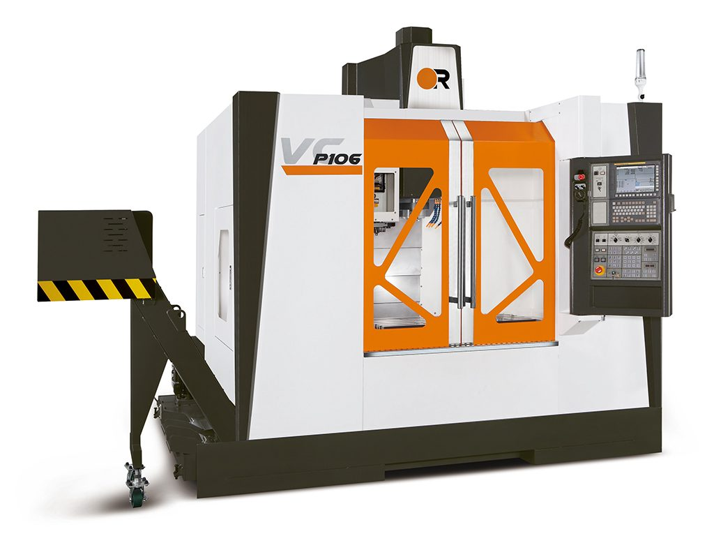
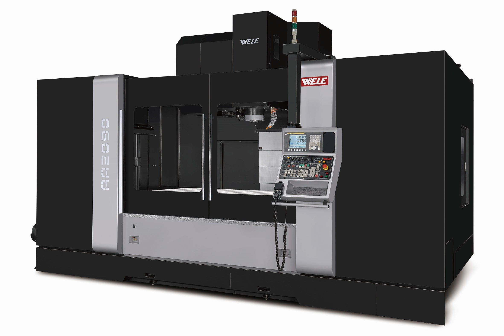
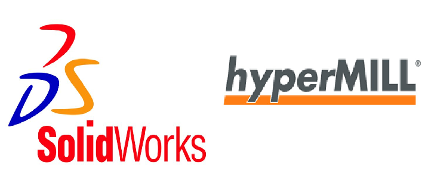

Victor Vcenter-P106 CNC Dik İşleme Merkezi, sağlam Meehanite döküm gövdesi, 1060 x 600 x 560 mm'lik geniş çalışma alanı ve yüksek rijitlik sunan masuralı lineer kızak sistemi sayesinde kalıpçılık ve hassas parça imalatı için tasarlanmış yüksek performanslı bir tezgahtır; genellikle 12.000 dev/dak (BBT-40) yüksek hızlı işmili ve hızlı takım değiştirme kapasitesine (30 Takım) sahip olan P106, 48 m/dak'ya varan hızlı ilerlemeleri ile çevrim sürelerini kısaltarak yüksek verimlilik ve istikrarlı hassasiyet elde etmeyi amaçlar.
"Detaylı Kalıp Bilgisi ve Güçlü CNC İşleme"
Makine Parkurumuz
VICTOR P106 CNC DİK İŞLEME

WELE AQ2090 CNC DİK İŞLEME

Wele AQ2090 CNC Dik İşleme Merkezi, özellikle büyük ve ağır iş parçalarının yüksek hassasiyetle işlenmesi için tasarlanmış, güçlü ve rijit bir tezgahtır; X ekseninde 2000 mm, Y ekseninde 900 mm'ye varan geniş hareket kabiliyeti ve 2000 kg'a yaklaşan tabla yük kapasitesi sunan bu model, genellikle BT-50 veya BT-40 konik seçeneği ile 6000 ila 8000 dev/dak hızlara ulaşan güçlü işmili motoru ve yüksek performanslı kontrol üniteleri (FANUC, Heidenhain vb.) ile donatılarak kalıp, havacılık ve genel ağır sanayi parçalarının verimli üretimi için ideal bir çözüm sunar.
ACROBAT DİŞ ÇEKME MAKİNASI

Acrobat Diş Çekme (Kılavuz Çekme) Makinesi, sabit tezgahlara taşınamayacak kadar büyük veya ağır iş parçalarına yerinde hassas ve hızlı diş çekme imkanı sunan, özel artikülasyonlu (eklemli) kol yapısıyla bilinen bir makinedir; genellikle M5'ten M24 veya M36'ya kadar geniş bir kapasitede, servo motorlu, hidrolik veya pnömatik tahrik sistemleriyle üretilen bu makineler, kolun sağladığı geniş çalışma yarıçapı ve sabit diklik özelliği sayesinde, sadece kılavuz çekme değil, aynı zamanda raybalama, havşalama ve pafta çekme gibi çok yönlü tesviye işlemlerini de yüksek hız ve minimum hata ile gerçekleştirebilme kabiliyetine sahiptir.
KULLANILAN YAZILIMLAR

SolidWorks ve PowerMill, modern mühendislik ve imalat süreçlerinin ayrılmaz bir parçası olan iki önemli yazılımdır. SolidWorks, 3D katı modelleme, montaj ve teknik çizim oluşturma yetenekleriyle öne çıkan popüler bir Bilgisayar Destekli Tasarım (CAD) programıdır. Tasarımcılar ve mühendisler, karmaşık parçaları dijital ortamda oluşturmak, analiz etmek ve görselleştirmek için SolidWorks'ü kullanırken; oluşturulan bu modellerin daha sonra fiili olarak üretilmesi aşamasında ise PowerMill devreye girer. PowerMill, özellikle Bilgisayar Destekli Üretim (CAM) alanında uzmanlaşmış bir yazılım olup, CNC tezgahlar için yüksek verimli, çok eksenli takım yolu stratejileri oluşturur. Bu iki yazılımın entegre çalışması, tasarımın SolidWorks'te başlayıp, üretim için gerekli hassas G kodlarının PowerMill aracılığıyla oluşturulmasına olanak tanıyarak, ürün geliştirme sürecini hızlandırır ve üretim kalitesini artırır.